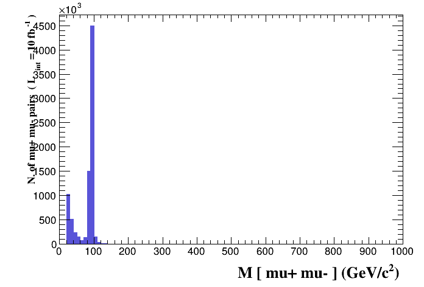

Setup
Command history
ma5>import ../mg_drell_yan/Events/run_01/unweighted_events.lhe as mysample
ma5>define mu=mu+ mu-
ma5>plot M(mu+ mu-)
ma5>submit
Configuration
-
MadAnalysis version 1.11.0 (2025/04/23).
-
Histograms given for an integrated luminosity of 10 fb-1.
Datasets
mysample
-
Samples stored in the directory: /home/mdias/posdoc/unicamp/F056/git/Exemplos/GeradorEventos/Example_2_MadGraph/MG5_aMC_v2_9_27/bin.
-
Sample consisting of: signal events.
-
Generated events: 10000 events.
-
Normalization to the luminosity: 8410400 +/- 18348 events.
-
Ratio (event weight): 841 - warning: please generate more events (weight larger than 1)!
|
Path to the event file |
Nr. of events |
Cross section (pb) |
Negative wgts (%) |
|
/home/mdias/posdoc/unicamp/F056/git/Exemplos/GeradorEventos/Example_2_MadGraph/MG5_aMC_v2_9_27/mg_drell_yan/Events/run_01/unweighted_events.lhe |
10000 |
841 @ 0.22% |
0.0 |
Histos and cuts
Histogram 1
* Plot: M ( mu+ mu- )
|
Dataset |
Integral |
Entries per event |
Mean |
RMS |
% underflow |
% overflow |
|
mysample |
8410400 |
1.0 |
77.8731 |
26.79 |
0.0 |
0.0 |
